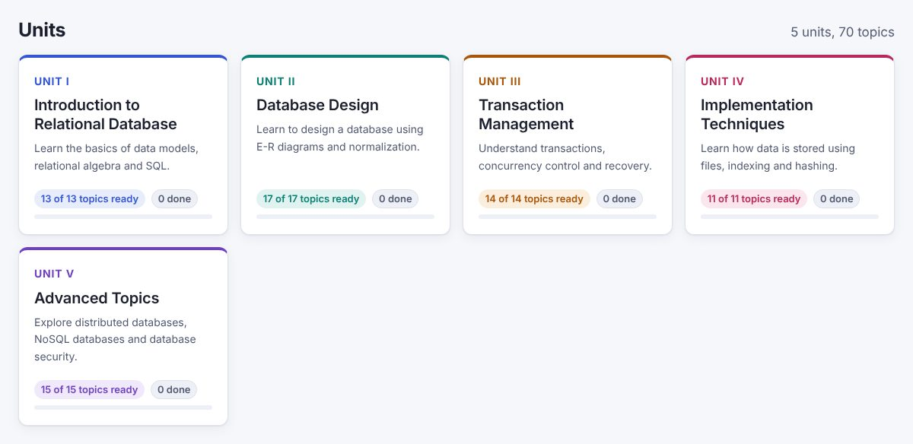
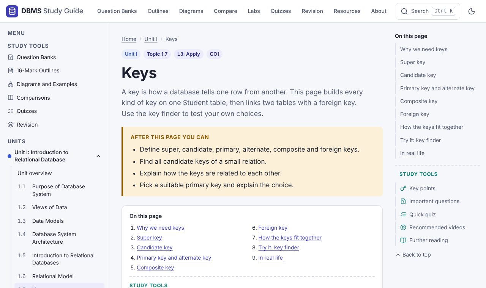
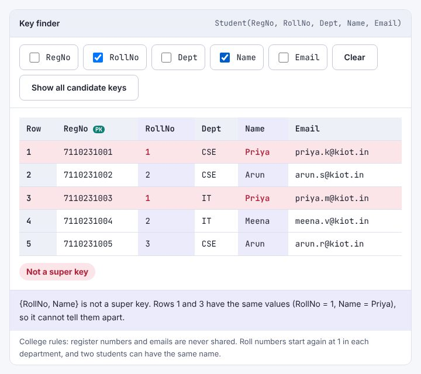
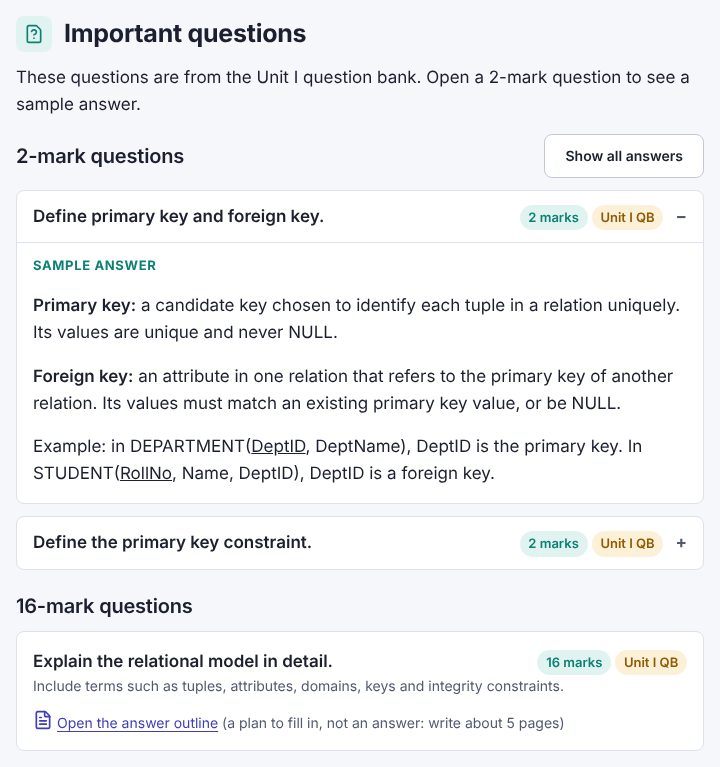
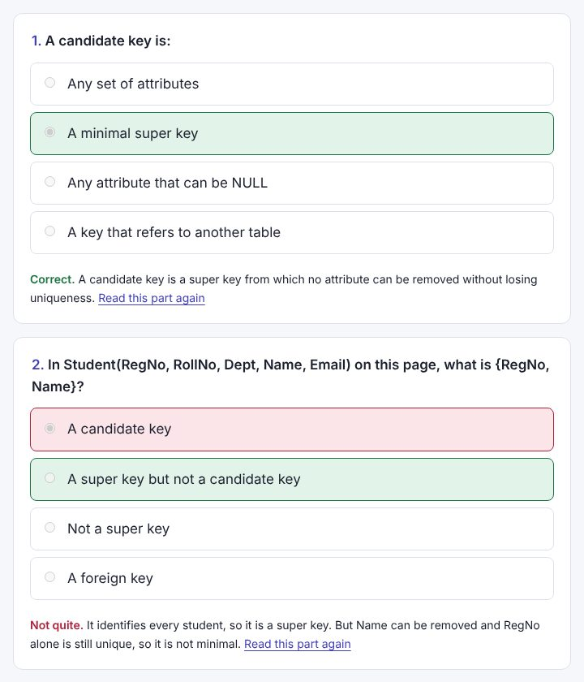
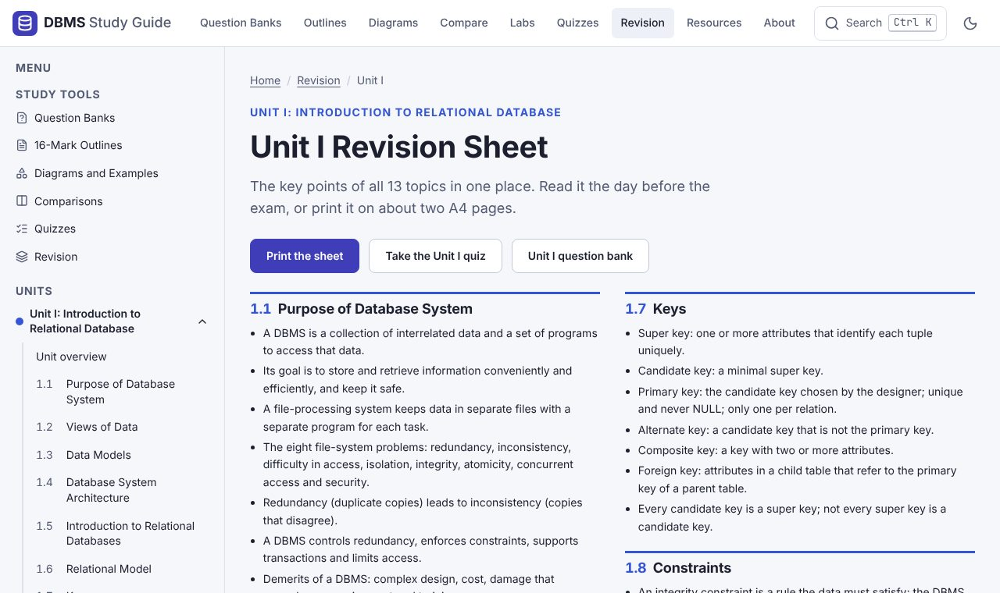
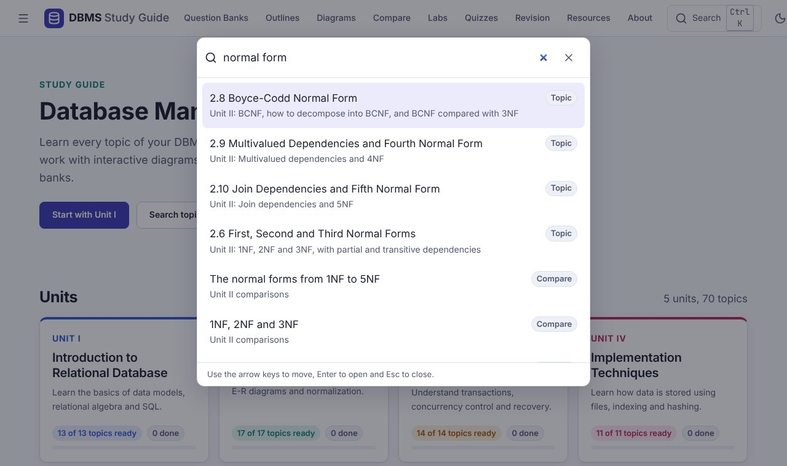

About this site
This site helps you learn Database Management System and prepare for your exams.
What you will find here
- A page for every topic in all five units, written in simple English
- Interactive diagrams that show how things work, step by step
- Important questions from the question banks, with model answers for 2-mark questions
- All 10 lab exercises, with each solution explained
- Quizzes, key points and revision sheets
How to use this site
Follow these steps for each unit. Select a picture to see it at full size.
-
Pick a unit on the home page. Each card shows how many topics you have marked as done.

The units on the home page. -
Read its topics in order. The menu on the left lists every topic of the unit. On this page, on the right, takes you to any section or study tool of the topic.

A topic page: Keys, in Unit I. -
Try each interactive diagram. Change the values and watch what happens.

The key finder shows which two rows break a key. -
Read the important questions. Try to answer each one before you open the model answer.

A 2-mark question with its model answer open. -
Take the quiz at the end of each topic. After you check your answers, each question says why the answer is right and links to the part of the page to read again.

The quiz shows the right answer and the reason. -
Before an exam, use the revision sheets and the unit quiz. The 16-mark outlines, diagrams and comparisons help you plan long answers.

The Unit I revision sheet.


Press Ctrl + K or / on any page to search. The search finds topics, pages and comparisons.


Site map
Every page on this site, 125 pages in all.
Main pages
Units and topics
Unit II: Database Design
- 2.1Entity-Relationship Model
- 2.2E-R Diagrams
- 2.3ER-to-Relational Mapping
- 2.4Functional Dependencies
- 2.5Non-loss Decomposition
- 2.6First, Second and Third Normal Forms
- 2.7Dependency Preservation
- 2.8Boyce-Codd Normal Form
- 2.9Multivalued Dependencies and Fourth Normal Form
- 2.10Join Dependencies and Fifth Normal Form
- 2.11SQL Set Operations
- 2.12Aggregate Functions
- 2.13GROUP BY and HAVING
- 2.14Joins
- 2.15Sub Queries
- 2.16Views
- 2.17Triggers
Unit III: Transaction Management
- 3.1Transaction Concepts
- 3.2ACID Properties
- 3.3Schedules
- 3.4Serializability
- 3.5Concurrency Control and Need for Concurrency
- 3.6Locking Protocols
- 3.7Two Phase Locking
- 3.8Deadlock
- 3.9Transaction Recovery
- 3.10Save Points
- 3.11Isolation Levels
- 3.12SQL Facilities for Concurrency and Recovery
- 3.13Backup and Recovery System
- 3.14SQL DCL and TCL Commands
Unit V: Advanced Topics
- 5.1Distributed Databases: Architecture
- 5.2Types of Distributed Databases
- 5.3Transaction Processing
- 5.4NoSQL Databases: Introduction
- 5.5CAP Theorem
- 5.6Document Based Systems
- 5.7Key Value Stores
- 5.8Column Based Systems
- 5.9Graph Databases
- 5.10Database Security: Security Issues
- 5.11Access Control Based on Privileges
- 5.12Role Based Access Control
- 5.13SQL Injection
- 5.14Encryption and Public Key Infrastructures
- 5.15Challenges
Study tools
Lab exercises
Labs
- Exercise 1: Design the database
- Exercise 2: Constraints, insert, update and delete
- Exercise 3: Foreign keys
- Exercise 4: WHERE and aggregate functions
- Exercise 5: Sub-queries and joins
- Exercise 6: Triggers
- Exercise 7: Views and indexes
- Exercise 8: Transactions, DCL and TCL
- Exercise 9: B+ tree in C
- Exercise 10: Document database (MongoDB)
- Starter script: games_store.sql
Your progress
The site remembers the topics you mark as done and your quiz scores. This is saved only in the browser on your device. Nobody else can see it.
Credits
This site was created by Walter Vetrivel S, Assistant Professor, Department of CSE, Knowledge Institute of Technology, Salem, using Claude, an AI assistant made by Anthropic.
The content follows the course syllabus and uses the terms from the two textbooks listed on the Resources page.
AI notice
The content on this site was generated by AI, based on human-written notes and textbooks. This includes the topic notes, the answers, the quizzes and the code of the site.
The notes, question banks and lab sheets used by the AI were written by teachers. The textbooks are listed on the Resources page.
AI can make mistakes. If something here does not match your textbook, follow the textbook and tell your teacher.
License
The content is shared under the CC BY-NC-SA 4.0 license. You may share and adapt it for non-commercial use. You must give credit and share your changes under the same license.
This site is a study aid. Always follow your syllabus, your class notes and the advice of your teachers.